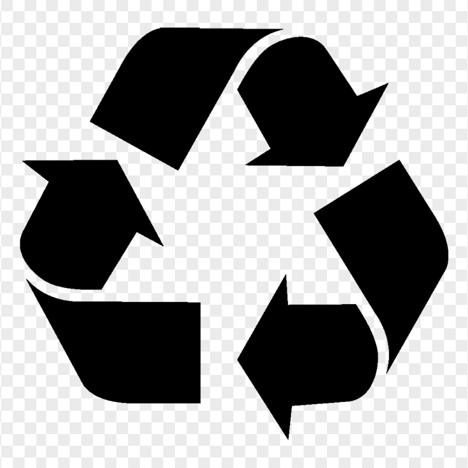
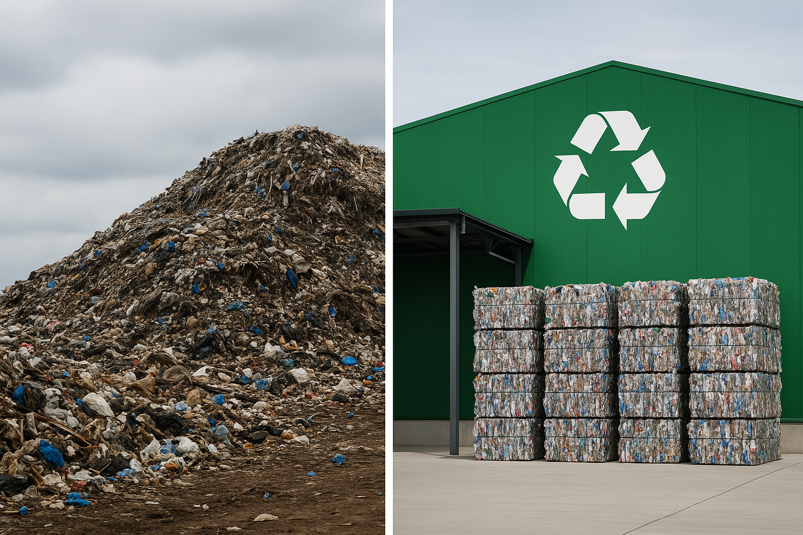
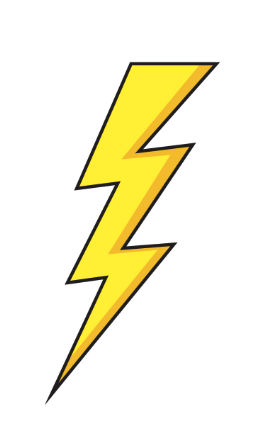
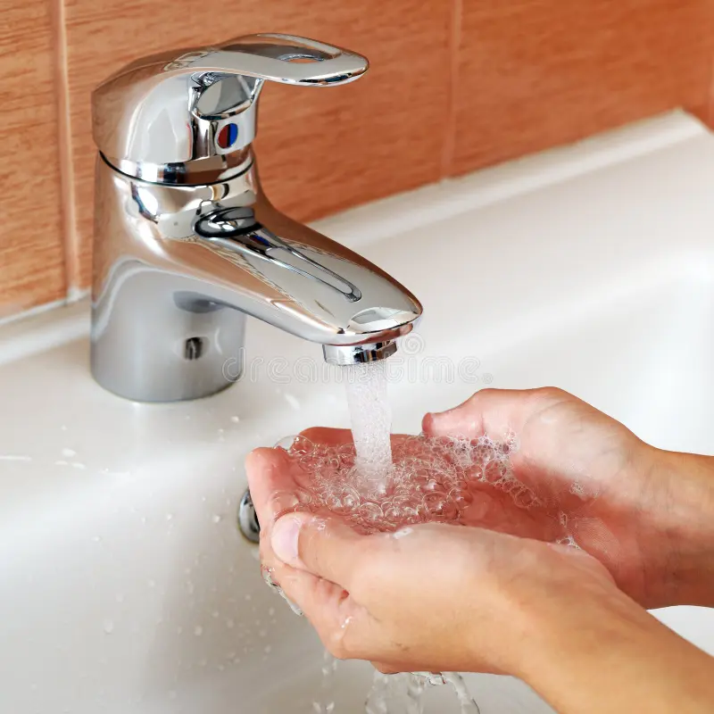
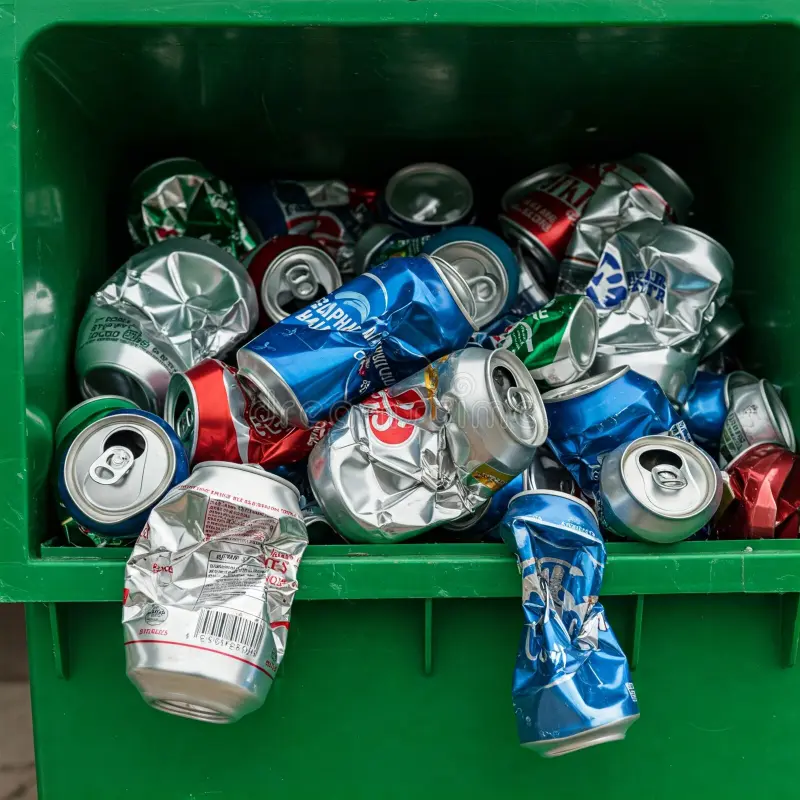
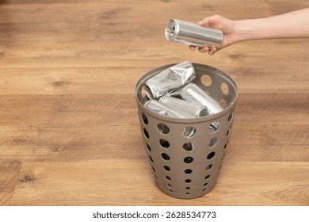

 Why Recycling Is Important
Recycling reduces waste sent to landfills and incinerators, conserves natural resources (like timber, water, and minerals), prevents pollution, and saves energy. Every ton of recycled aluminum saves nearly 10,000 kWh of electricity—enough to power an average home for about 9 months.
By cycling materials back into the production process, we reduce the need to extract raw materials, which often involves habitat destruction and high carbon emissions.
Benefits of Recycling
-  Conserves Resources: Gives paper, plastic, and metal a second life instead of extracting new materials.
- Saves Energy: Manufacturing with recycled materials often uses significantly less energy.
- Reduces Pollution: Cuts air and water pollution from raw-material extraction and processing.
- Decreases Greenhouse Gases: Lower CO₂ emissions by reducing the energy needed for production.
- Supports Local Economies: Creates jobs in recycling and remanufacturing industries.
- Extends Landfill Life: Less trash means landfills fill up more slowly, delaying the need for new sites.
Ways to Recycle Your Own Cans
1. Rinse and Dry
Before tossing aluminum or steel cans into the recycling bin, give them a quick rinse to remove leftover residue. Dry them out so other recyclables stay clean.
2. Crush to Save Space
Gently crush cans using your foot (or a can crusher). Flattened cans take up less room in your bin or curbside container.
3. Separate by Material
If your local recycling program requires sorting, keep aluminum cans separate from steel/tin cans. Check with your municipality if they accept mixed cans or need them separated.
4. Use a Storage Bin
Keep a small “can-only” bucket in your kitchen. Once it’s full, empty it into the main recycling bin or take it to a drop‐off center.
5. Check for Refund Programs
In some states (like California, Oregon, and Michigan), you can return empty aluminum or steel cans for a cash deposit (e.g., 5¢ or 10¢ per can). Look up “bottle bill” in your state to see if you qualify.
6. DIY Projects
Instead of recycling every can, consider upcycling a few—turn aluminum cans into pencil holders, small planters, or lanterns. Just make sure you still recycle any leftover scrap.
More Resources
 FAQ
FAQ
Most curbside programs accept aluminum cans, steel/tin cans, paper, cardboard, and certain plastics (check the number on the bottom). Glass bottles and jars are often recyclable too. Always check your local guidelines for specifics.
Not all plastics are created equal. Some plastics (like #1 PET and #2 HDPE) are widely accepted, while others (#3–#7) often require specialized facilities. Mixed‐material containers (e.g., certain juice boxes) can’t be processed easily by some recycling centers.
A quick rinse is usually enough—just swirl some water around to remove leftover residue. That keeps your bin from smelling and makes the sorting process smoother at the recycling facility.